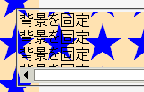

overflowプロパティにscrollやautoが指定された要素の背景画像を固定した（background-attachment: fixed;）とき、背景の基準位置が閲覧領域左上端ではなく当該要素の左上端になる（html, body要素を除く）。
<style type="text/css">
body {
background-attachment: fixed;
background-image: url(../img/img01.png);
background-repeat: repeat-y;
}
div.scrl {
background-attachment: fixed;
background-image: url(../img/img01.png);
overflow: scroll;
height:5em;
}
</style>
<div class="scrl">背景を固定<br>背景を固定<br>……</div>
body要素の左端に固定配置した背景画像とdiv要素全体に固定配置した背景画像はつながって表示されるはずです。
Moz1.0.1での表示（標準モード）
WinIE6.0での表示（標準モード）
WinIEでは、html, body要素以外の要素に指定した背景画像が閲覧領域に対して固定されません（WinIEバグ065）。
WinIE6.0では、標準・互換モードともに不具合の発生が確認されました。